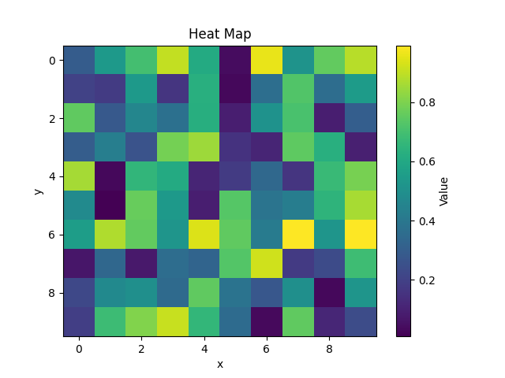
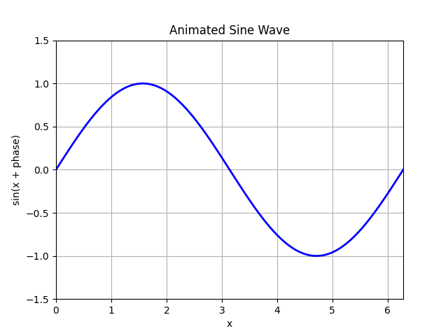

Matplotlib is a widely used Python library for creating visualizations. It provides a flexible platform for generating a variety of plots and charts, making it an essential tool for data analysis and presentation. Matplotlib is open-source and free to use.
Matplotlib began as an emulation of MATLAB's plotting capabilities (hence the name "Matplotlib" which is a portmanteau of "MATLAB", "plotting", and "library"). However, it has since evolved into a comprehensive library supporting numerous plot types and customization options and is entirely independent on MATLAB.
Matplotlib is capable of creating a wide range of static, animated, and interactive plots. The plots below demonstrate some of the basic capabilities of Matplotlib.
 